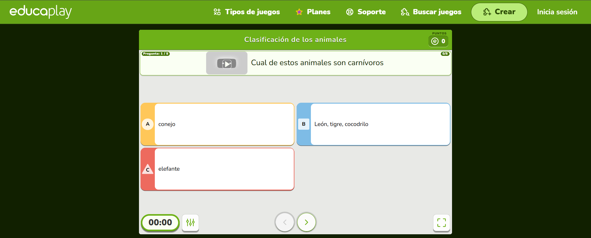
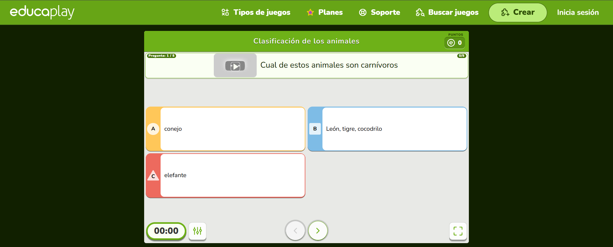

TAREA INDIVIDUAL CLASIFICACIÓN SEGÚN SU ALIMENTACION
https://es.educaplay.com/recursos-educativos/2011233-clasificacion_de_los_animales.html

TAREA INDIVIDUAL CLASIFICACIÓN SEGÚN SU ALIMENTACION
https://es.educaplay.com/recursos-educativos/2011233-clasificacion_de_los_animales.html

Obra publicada con Licencia Creative Commons Reconocimiento Compartir igual 4.0